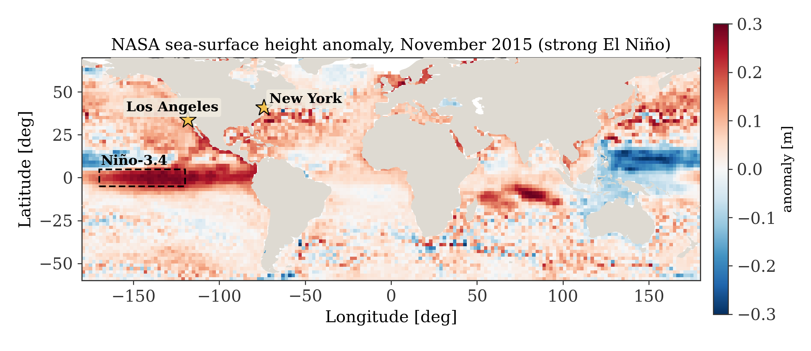
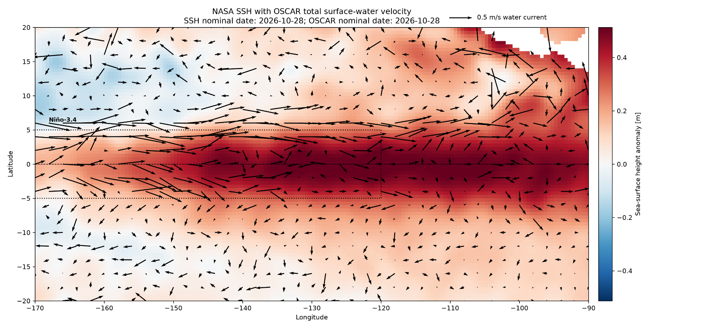
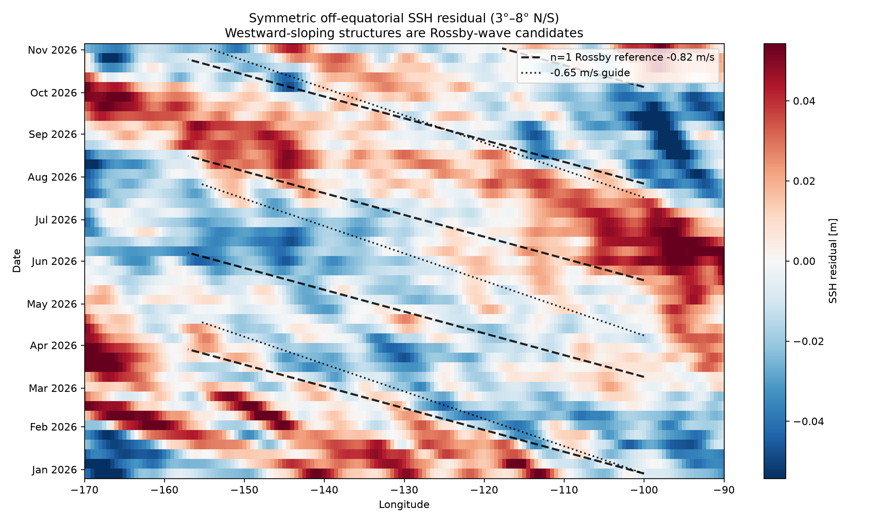
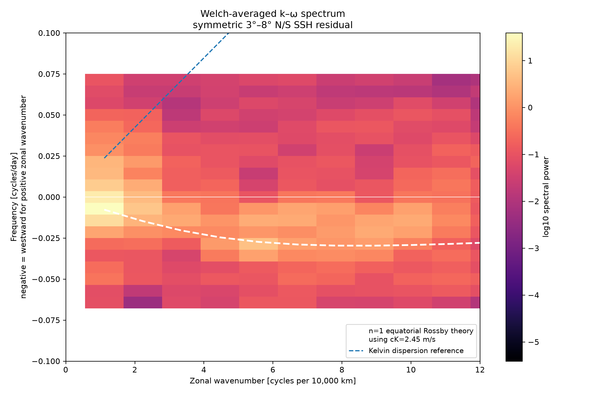
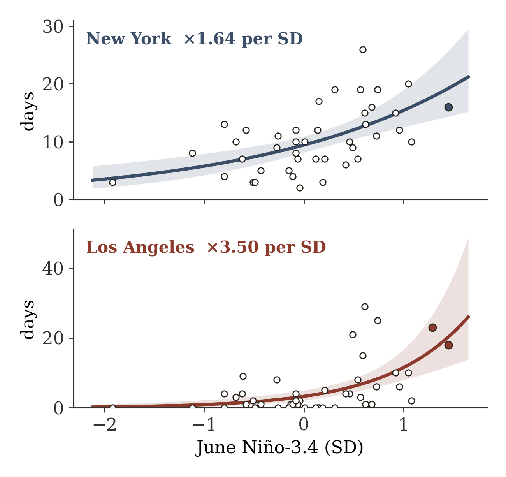
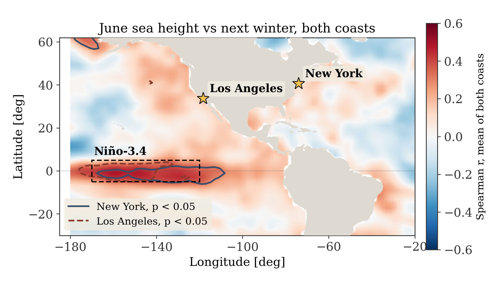
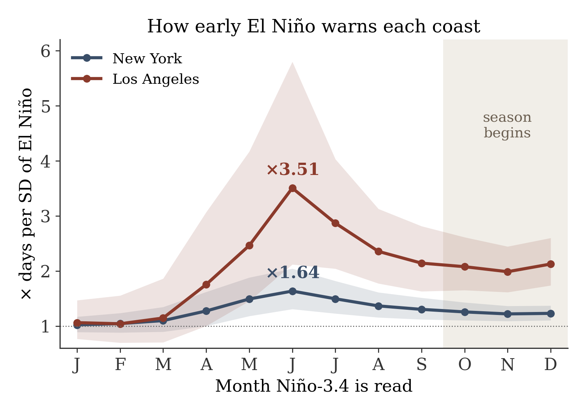
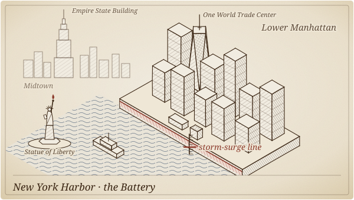
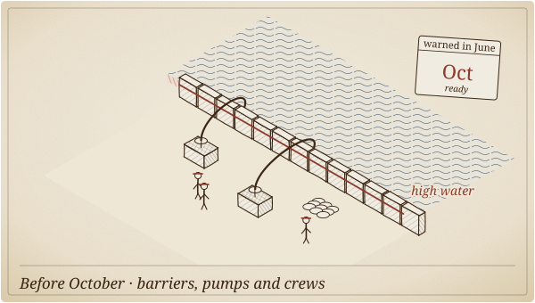
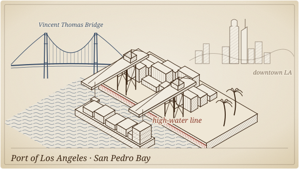

NASA Space Apps 2026 · Be an Earth System Trend Detective
Sea Level Detective
Can the far side of the planet warn New York about its winter storm surges?
Team Poseidon SAR
Maxim Zyskin · Hanyue Shen · Ningzi Chen
NASA Space Apps 2026 · Be an Earth System Trend Detective
Can the far side of the planet warn New York about its winter storm surges?
Team Poseidon SAR
Maxim Zyskin · Hanyue Shen · Ningzi Chen

1 · The initiative
I
Nor’easters push the ocean into New York Harbor: about 10 storm-surge days a winter, 30 cm above normal.
II
29 NASA and NOAA clues, each read in every month. Winds and North Atlantic pressure set the harbor month to month (32% of its level).
III
El Niño, read in June, foretells the whole season: strong El Niño winters bring 16 storm-surge days; an average winter brings 10.
Two routes to one warning: ocean physics sharpens the next 14 days; statistics reads a whole season ahead.
Storm-surge days per winter at the Battery, 1981–2025 · red: strong El Niño winters · dashed line: average, about 10
2 · Physics of the ocean
Equatorial shallow-water model
Kelvin waves run east along the equator (v = 0); the first Rossby wave runs west, its long-wave phase speed near −c/3. NASA sea height shows both.
+1.50–1.62 m/s
Kelvin-like, eastward · 2015–16 El Niño
−0.68–0.78 m/s
Rossby-like, westward · 2026 check



NASA sea height and OSCAR currents, late October 2026: high sea along the equator.
Westward-sloping sea-height bands follow the first-Rossby speed.
Wavenumber–frequency power sits on the n = 1 Rossby branch.
Data: NASA-SSH reference-mission sea height, 0.5° weekly; 2015–16 El Niño (29 Dec 2014 – 4 Jul 2016, 170°W–100°W, 8°S–8°N, 80 maps) and a 2026 Rossby check (Jan–Nov, 170°W–90°W, 3°–8° N/S). Team analysis: M. Zyskin.
3 · Physics results
Residual nonlinear shallow-water model
η = η₀ + α·Δη + β(η₀ − η₋₁)
Δη is the shallow-water model’s predicted change. Forecast only the dynamical correction to the observed background, so persistence is the exact reference. α and β are fit on earlier windows only; no future wind forcing.
Data and test
NASA SSH V1.1 + OSCAR V2 currents · 201 weekly states, 2023–2026 · 182 rolling 14-day forecasts, 170°W–100°W, 10°S–10°N.
Skill = 1 − RMSE(model) / RMSE(persistence)
+12.3%
lower sea-height error than persistence (95% CI +10.3% to +14.3%)
168 / 182
forecasts beat persistence (92%)
+9.4%
14-day surface-current skill
4 · Statistics: modelling and results
Tide removal
Subtract NOAA’s harmonic tide prediction: η = observed − predicted. Storm-surge day: daily mean η > 0.30 m above its 365-day mean.
Least squares with Fourier features
y(t) = a + b·t + Σₖ [cₖ sin 2πkt + dₖ cos 2πkt] + ε
k = 1, 2: annual and semiannual cycles; b = trend.
Error bars with memory
AR(1) residuals: n_eff = n(1−ρ)/(1+ρ). No-trend 10-year records: plain least squares finds a trend 41% of the time; corrected, 7%.
30
candidate predictors (July–September means)
4
pass Benjamini–Hochberg FDR 10%, 1981–2010
2
also predict 2011–2025 and each left-out winter
1
signal: El Niño (NOAA ONI, NASA GISTEMP)
Monthly leads: AR(1)-prewhitened, 348 tests; none beat persistence.
log E[N(w)] = β₀ + β₁·w + β₂·x(w, m)
Quasi-Poisson fit to past winters, 1981–2025; x = El Niño read in June. Error per winter 3.8 days vs 4.6 for the trend alone; altimetry r = 0.43.

5 · Visualizations


6 · What it tells us

About 21 storm-surge days expected for 2026–27 (likely 14–32): twice normal.

Barriers, pumps and crews in place before October: a whole season of lead time.

Free NASA and NOAA data. Los Angeles: ×2.3 per step of El Niño (New York ×1.4).
Physics: the next 14 days. Statistics: a whole season.
Explore it: ivyreia3-boop.github.io/wbsite/sea-level-detective
Data: NASA altimetry (MEaSUREs, NASA-SSH), GISTEMP, POWER and GIBS · OSCAR currents · NOAA tide gauges and climate indices · Team Poseidon SAR